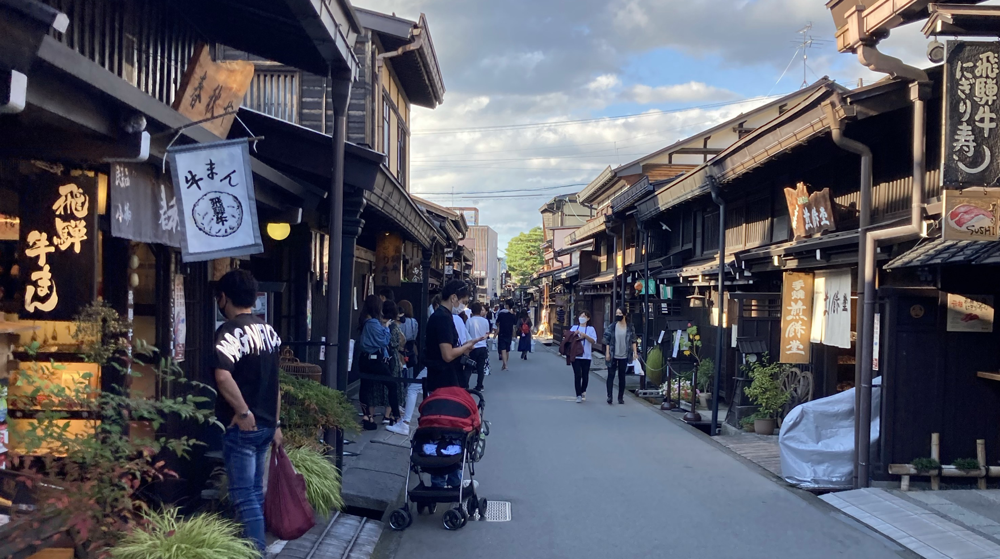
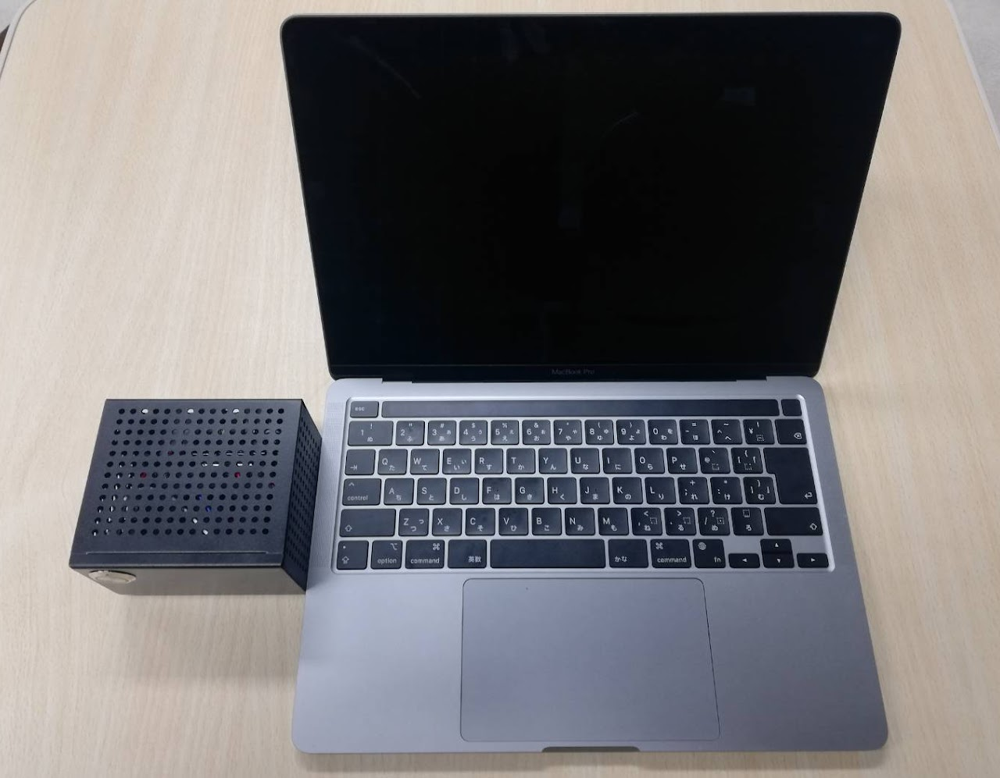
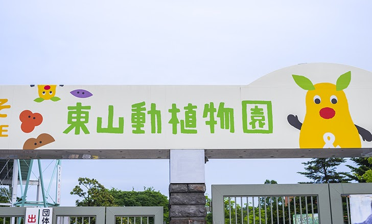

飛騨高山地域
岐阜県飛騨高山地域で、Jetsonという小型ながらGPUを搭載したPCを使用し、人間や車の交通量を計測しています。
これまで、国が行う年間限られた回数しかできなかった交通量の計測を常時計測し，観光地運営に活かします。
また，Googleビジネスプロフィールなどの情報発信ツールの効果的な使い方についても研究しています。
快適・ニーズに合う観光と，負担の少ない観光地運営を両立することを目指しています。

円頓寺商店街
名古屋市の円頓寺商店街で、同様にJetsonを使用し、人間交通量を計測しています。

須恵器の分析
名古屋大学大学院人文学研究科と共同で、須恵器の形状分析や自動実測図作成システムの構築を行なっています。
ニッチな分野かもしれませんが、最先端で野心的なプロジェクトです。
東山動植物園（終了しました）
名古屋市東山動植物園で、物体検出アルゴリズムのYOLOを使用し、ベビーカの台数計測を行っています。
YOLOにはベビーカが学習されていないため、データ収集や学習の段階から行いました。
チケットなどが存在せず，これまで把握することができなかったベビーカ利用者の傾向の把握に役立ちます。
